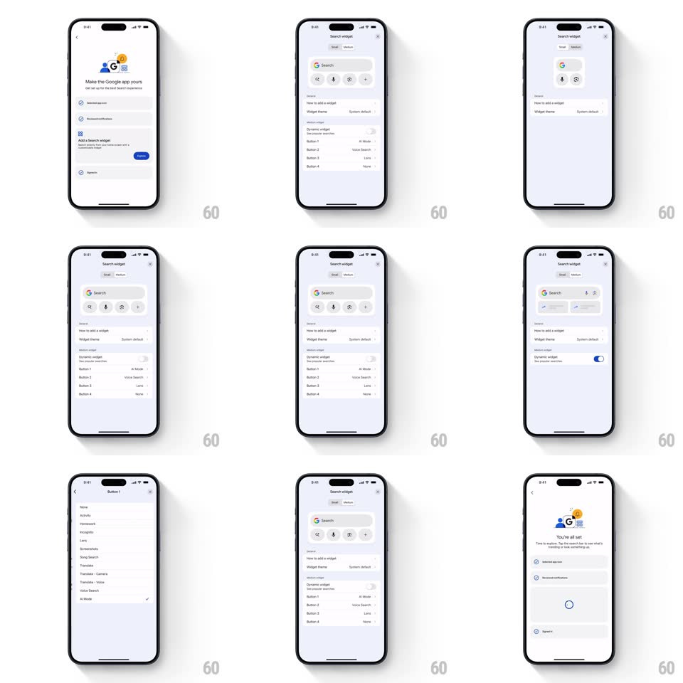

Media
Frame-by-frame

Rebuild this interaction 1:1: Google's "Make the Google app yours" setup checklist - each row spins through a loading state into an animated checkmark, and the header flips to "You're all set" when the list completes.

Rebuild this interaction 1:1: Google's "Make the Google app yours" setup checklist - each row spins through a loading state into an animated checkmark, and the header flips to "You're all set" when the list completes. ## Integration Integration: stack-agnostic spec - springs given as stiffness/damping, timed motions as duration + curve; map every value to your framework and animation library of choice. ## Scene Light grey setup screen: a colorful Google illustration header over "Make the Google app yours", a list of setup rows (circular checkbox, title, subcopy, blue action pill like "Enable" / "Add"), finishing in a "You're all set" header state with all rows checked. ## Motion spec Pattern: checklist completion sequence. - Activate: tapping a row's action starts an inline spinner inside that row's checkbox circle (rotating arc, 1 rev per 900ms) and disables its pill (fade to 40%). - Complete: the spinner collapses (scale 0.8 -> 0, 150ms) as a checkmark draws itself inside the circle (stroke draw, 250ms, ease-out) and the circle fills; the row's copy dims slightly. - Rows settle one after another with a 100ms stagger when several complete together. - All done: the header crossfades to "You're all set" (300ms) with its illustration, and unchecked rows cascade their checkmarks in (120ms stagger). ## Calibration - The spinner lives inside the checkbox circle - it does not replace the row. - The checkmark is a stroke draw, not a fade-in glyph. ## Reduced motion Spinner runs; checkmarks fade in without the draw. ## Don't miss - The pill and the checkbox animate together - pill dims as the spinner starts. - The final header swap waits for the last row's check.